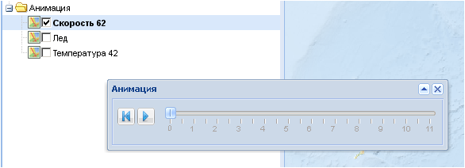
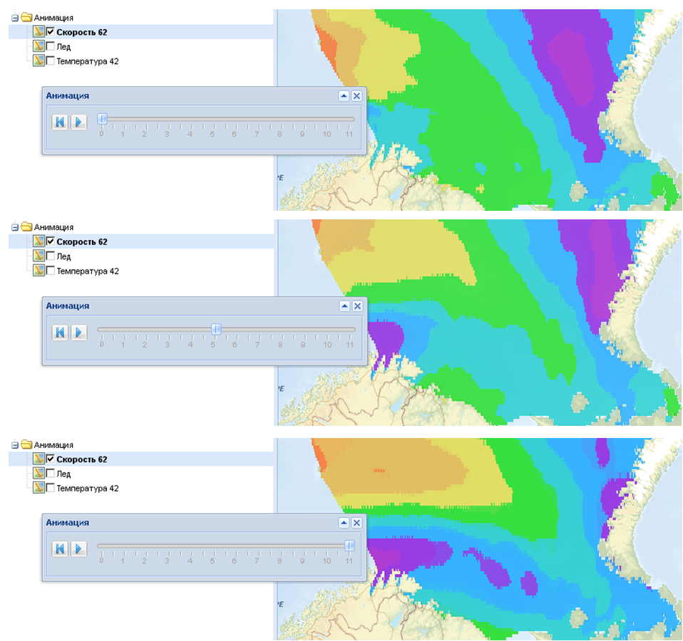

Папка Анимация
Служит для загрузки специальных комплексных слоев – стэков, использующихся для анимации слоев данных. Стэк представляется собой набор тематических однотипных слоев, отображающих динамику данных во времени (например, прогноз температуры воздуха на 0, 8, 12 …120 часов).
В папке Анимация вложения не активированы. Для запуска анимации необходимо выбрать нужный стэк данных. Появится дополнительное окно Анимация, позволяющее управлять процессом анимации и которое можно свободно перемещать по экрану.

Пиктограмма запускает анимацию, - возвращает анимацию в начальное положение, - сворачивает окно в строку, - закрывает окно. Кроме автоматического запуска процесса анимации пользователь может самостоятельно осуществлять смену слоев, двигая ползунок с помощью нажатой левой кнопкой мыши и наблюдая за изменением значения показателя тематического слоя в разные временные точки.
